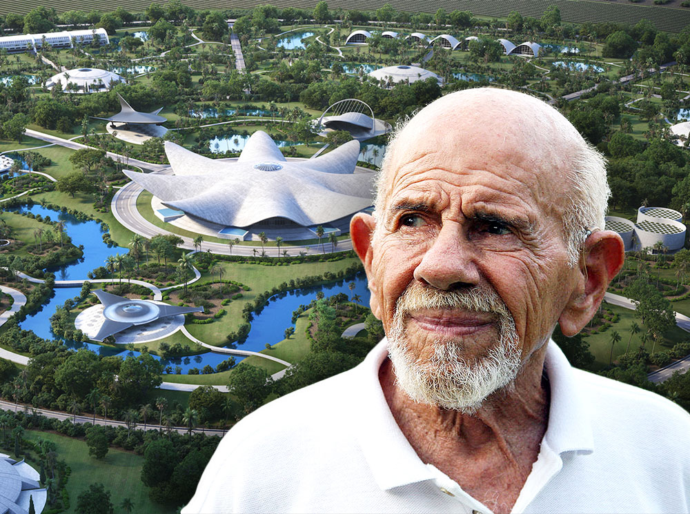
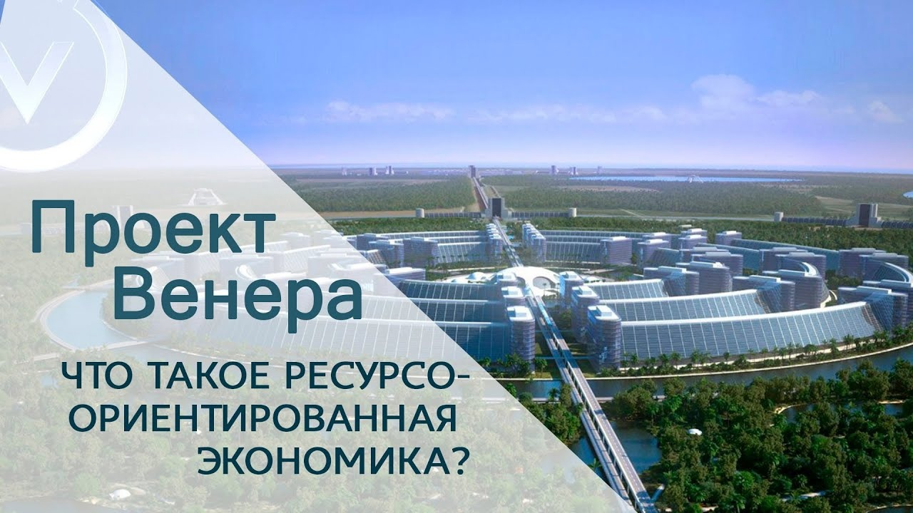

Проект Венера
Что из себя представляет
Проект Венера – некоммерческая международная неправительственная организация, созданная Жаком Фреско и занимающаяся реализацией проекта, направленного на достижение мирной, устойчивой, постоянно и стабильно развивающейся глобальной цивилизации, через переход ко всемирной ресурсо-ориентированной экономике, всеобщей автоматизации, внедрению всех последних научных достижений во все области жизни человека и применению научной методологии принятия решений. Исследовательский центр проекта находится в городе Винус, штат Флорида, США. Название проекту было дано по англоязычному названию города, которое в переводе на русский язык означает «Венера».
Проект Венера представляет собой взгляд на будущее не с позиции того, каким оно будет, а каким оно может быть, если использовать доступные человечеству знания для достижения новой жизнеустойчивой глобальной цивилизации.
Проект призывает к целенаправленному подходу по реконструкции культуры, в которой извечные проблемы войн, бедности, голода, а также долги, загрязнение окружающей среды и необоснованные человеческие страдания рассматриваются не только как разрешимые, но и как полностью неприемлемые. Любые меньшие по масштабу перемены приведут к повторению тех же проблем, что существуют сегодня.
Жак Фреско считал, что «Проект Венера» является целостной социально-экономической системой, в которой автоматизация и технологии будут разумно интегрированы во все общественные сферы с целью повышения уровня жизни, а не получения прибыли, в отличие от современной системы. Прибыль должна прекратить играть роль критерия при выборе решений. Также, исходя из того, что человек является частью окружающей среды, предлагается новая система ценностей человеческого существования (в соответствии с несущей способностью Земли), которая бы заботилась об окружающей среде и о всех людях, а также соответствовала бы природе человеческих потребностей. Фреско считал эти идеи вполне реализуемыми и практичными.
Придерживаясь интегрального подхода к проблемам, Фреско считает, что реализация целей и предложений в локальном, а не в общемировом, масштабе приведёт человечество лишь к повторению ранее совершённых ошибок.
Предполагается, что реализация проекта даст обществу широкий выбор возможностей, которые приведут к новой эпохе мира и устойчивого развития. Внедрение ресурсо-ориентированной экономики, направленной на благо всего человечества, должно искоренить преступность, нищету, голод, решить проблемы бездомных и множество других злободневных вопросов, которые сегодня актуальны во всем мире.
Подробнее об ресурсо-ориентированной экономике
В ресурсо-ориентированной экономике люди будут оперировать не деньгами, а доступными ресурсами с целью создать самые справедливые и эффективные средства их распределения. В такой экономической системе все товары и услуги доступны каждому без использования денег, кредитов, бартера, или какой-либо формы долга или прислуживания.
Чтобы лучше понять ресурсо-ориентированную экономику, можно представить следующее: если бы все на свете деньги неожиданно исчезли, причем плодородные земли, заводы, квалифицированный персонал и другие ресурсы остались, мы смогли бы произвести всё необходимое для удовлетворения потребностей человека. Людям нужны не деньги, а свободный доступ ко всему необходимому для жизни, не заботясь при этом о своем финансовом состоянии и не обращаясь за помощью к правительственным учреждениям. В условиях изобилия, создаваемого ресурсо-ориентированной экономикой, деньги потеряют всякий смысл.
Критика проекта
Неизвестно о наличии у «Проекта Венера» подробных работ или исследований по следующим вопросам:
- Как на практике должно обеспечиваться внедрение всех предложений «Проекта Венера» с учётом существующих реалий и ограничений?
- Какие новые проблемы может принести внедрение «Проекта Венера» и переход на ресурсо-ориентированную экономику, как они учтены в рамках предлагаемой концепции?
Из-за отсутствия конкретики предлагаемую концепцию крайне трудно фальсифицировать, что выводит её за рамки научной дискуссии. Также нет данных о независимых социологических, психологических и экономических исследованиях обоснованности концепции, хотя сторонники «Проекта Венера» утверждают, что он базируется на научной основе.
По мнению некоторых экспертов, «Проект Венера» является «утопическим социализмом 21 века». По их мнению, путь к преодолению экономических кризисов Жак Фреско видит в уничтожении денежной системы. Предлагается альтернатива частной собственности на средства производства. Предполагается, что в результате просвещения и пояснения люди должны сознательно избрать предлагаемый «Проектом Венера» путь развития. Сторонники оценки проекта как утопичного считают, что он не имеет экономической обоснованности и «не предлагает конкретного спланированного выхода из кризиса» — предполагается лишь, что после реализации «Проекта Венера» кризисов не будет, так как исчезнут предпосылки для их возникновения. Фреско предлагает сознательный отказ от использования денег в экономике, но критики проекта полагают, что такой сознательный подход является лишь одним из альтернативных вариантов действий, а не закономерным и неизбежным процессом.